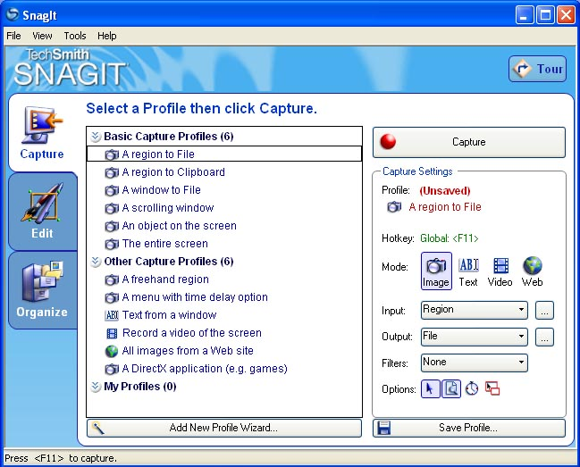
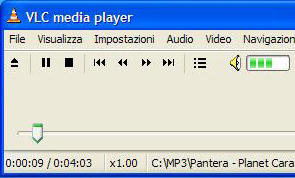

SnagIt 8.2.3  SnagIt è un programma per la cattura di immagini dallo schermo, che consente di scegliere quale parte o elemento catturare e offre molte opzioni di personalizzazione.
|
VLC Mediaplayer 0.8.6  VLC (VideoLAN Client) è un lettore multimediale compatibile con i maggiori formati audio e video: MPEG-1, MPEG-2, MPEG-4, DivX, MP3, OGG, DVD, VCD. Supporta vari protocolli di trasferimento streaming. |